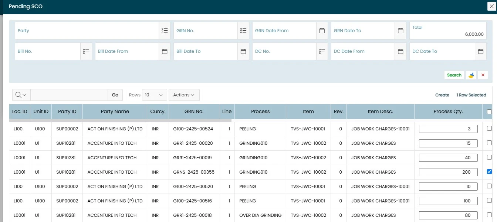
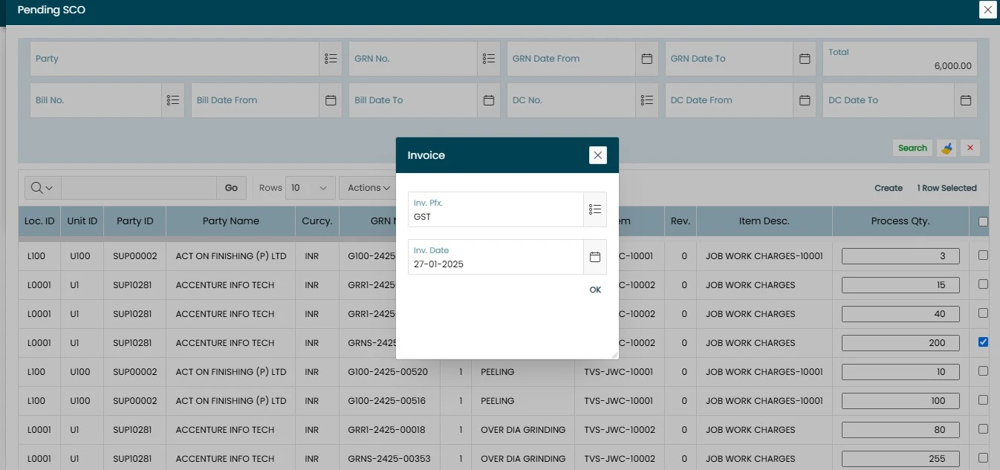
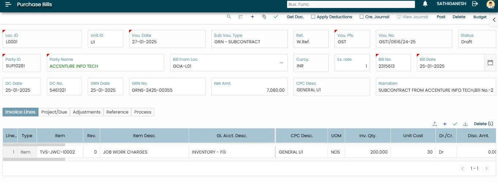
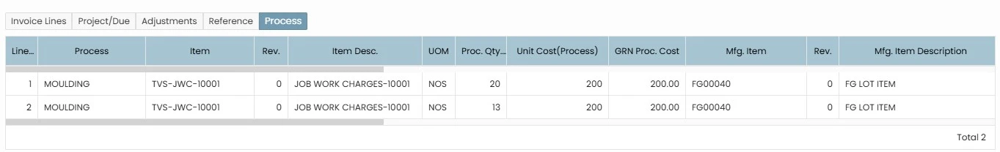
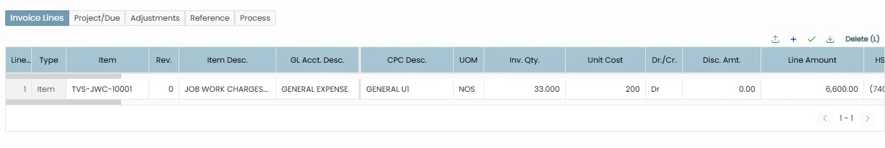
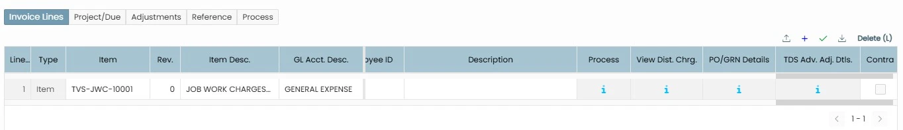
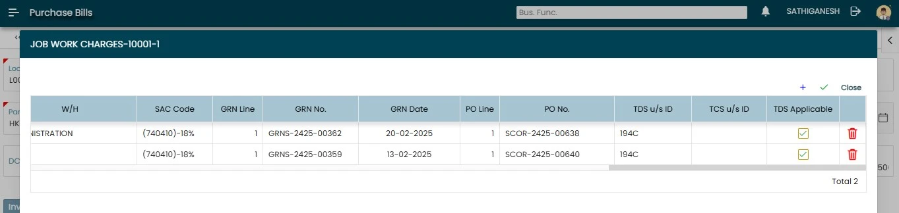

<div data-category="Financials" data-title="GRN Subcontract (with reference)" data-updated="December 01, 2025" data-contributors="RoadmapIT" data-breadcrumb="Home,Financials,GRN-Subcontract (with reference)">
  <div class="page-content">
    <p>A subcontract GRN records the receipt of the finished products from the vendor, and also updates the consumption of the materials that were sent to the vendor.</p>
    <p>The GRN which are received against subcontract will be loaded in this screen; the invoice can be created from this Screen.</p>
    <h5>Navigation path:</h5>
    <p class="fs-6">Financials \ Transactions \ Party Document \ Purchase Bills</p>
    <h2>Registering Invoice</h2>
    <ul style="list-style-type: none; align-content: center">
      <li class="mouse-icon">Click on Pending SCO button.</li>
    </ul>
    
    <ul style="list-style-type: none; align-content: center">
      <li class="mouse-icon">Search the Record by using the GRN No. and Records based on date.</li>
      <li class="mouse-icon">Select checkbox and click Create.</li>
    </ul>
    
    <ul style="list-style-type: none; align-content: center">
      <li class="mouse-icon">Select Inv.Pfx from Lov.</li>
      <li class="mouse-icon">Enter/Select Inv. Date.</li>
      <li class="mouse-icon">Click ok.</li>
    </ul>
    
    <ul style="list-style-type: none; align-content: center">
      <li class="mouse-icon">Invoices can be registered in this screen.</li>
      <li class="mouse-icon">Click post button and the document can be forwarded for approval.</li>
    </ul>
    <h2>Process</h2>
    <p>The subcontract process can be viewed in this tab.</p>
    
    <h2>Invoice Lines</h2>
    <p>Based on the process the item details will be summarized in this tab based on the item and Unit cost.</p>
    
    <ul style="list-style-type: none; align-content: center">
      <li class="mouse-icon">Click on process button to update the TDS under section.</li>
    </ul>
    
    
  </div>
</div>